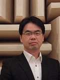
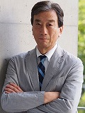
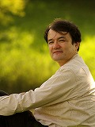

-
1枚のフリスビーでアフリカを変える
大川 晴
Haru Ohkawa
#1
-
生命の起源に魅せられて
藤島 皓介
Kosuke Fujishima
#2
-
ロッキングチェアーテスト
Eric Kipp
#3
-

人はみな同じ世界を知覚しているか？
柏野 牧夫
Makio Kashino
#4
-
自分の祖母の遺伝子を継ぐリンゴを食べられますか
福原 志保
Shiho Fukuhara
#5
-
マイクロプレゼンス
小檜山 賢二
Kenji Kohiyama
#6
-
瞬間のアート
向田 麻衣
Mai Mukaida
#7
-
問い続けるミッション
岩田 松雄
Matsuo Iwata
#8
-
教育の種を蒔く
税所 篤快
Atsuyoshi Saisho
#9
-

鏡に見える自分
黒川 清
Kiyoshi Kurokawa
#10
-
人生のスパイス
高桑 早生
Saki Takakuwa
#11
-

思考の道具としてのスケッチ
山中 俊治
Shunji Yamanaka
#12
-
インターネットが創造したグローバル
村井 純
Jun Murai
#13
Speakers
TEDxKeioSFC を飾る、各界を先導するスピーカーをご紹介します｡
1枚のフリスビーでアフリカを変える
The ULTIMATE way to develop Africa
#1
大川 晴Haru Ohkawa
コンゴ民主共和国へ渡りわずか 6 ヶ月。コンゴで誰一人として知らなかったアルティメットというスポーツを国の公式種目に認定させ、今、コンゴで一大ムーブメントを巻き起こしている男、大川晴。彼の目指すものは、コンゴの社会変革と平和構築。アルティメットを通してコンゴ人が道徳心や規律、秩序を自然と身に付ける機会を与える。そしてアルティメットを国とそこに生きる人々の美意識を育むスポーツへと展開させる。アルティメットと平和構築。一見繋がりがないように見えるこの二つの接点を作るのが審判不在という競技特性。審判がいないアルティメットこそフェアにプレーをする精神が自然に身に付け、それが普段の生活にも還ってくると大川氏は信じる。コンゴにおけるアルティメットの普及。スポーツの域を超えた競技の普及活動に特別な意味を込め、フライングディスクにコンゴの平和を託す。
大川 晴 (おおかわ はる)。慶應義塾大学 SFC 在籍。現在は休学しており、コンゴ民主共和国でアルティメットを 通した平和活動に取り組んでいる。
生命の起源に魅せられて
How Origins of Life and Universe Inspire Us
#2
藤島 皓介Kosuke Fujishima
「生命の起源を明らかにする」。これが藤島皓介のミッション。アストロバイオロジー(宇宙生物学)におけるこの根源的なテーマが明らかになるかどうかは誰にも分からない。しかしひとつ言えることは、追い求めなければそれは見つからないということ。SFC の先端生命科学研究会で９年間原始生命システムの進化について学び、現在は多様な研究者からなる NASA Ames 研究所で働く藤島氏。氏にとってこのテーマは、今までに培った知識と技術を総動員して取り組むべき課題である。この課題には宇宙化学や合成生物学といった異なる学問を融合させた学際的なアプローチをとっている。一つの学問では語りきれないスケールの大きさと奥深さを、様々な分野の知見を合わせ、答えを導き出す。「私たちはどこから来たのか？ そしてどこへ向かうのか？」というシンプルだけれど根源的なこれらの問いかけについて、科学的視点から語る。
藤島 皓介 (ふじしま こうすけ)。NASAエイムズ研究センター研究員。専門は宇宙生物学。他に、カルフォルニア大学サンタクルーズ校・日本学術振興会（海外特別研究員）・慶應義塾大学先端生命科学研究所など。
ロッキングチェアーテスト
The rocking chair test
#3
Eric Kipp
アメリカ中部でカトリックの家族の 6 人兄弟の末っ子として育ったエリック・キップ氏。大学時代には「素敵な場所」との出会いに没頭し、様々な国に足を運んだ。そこで行動力を培い、自己解放を重んじる彼の軸が作られた。エリック氏が彼自身の本当にやりたい事や夢に目を向けるようになり、ハイキングヨガを創設した。エリック氏の狙いは、ハイキングとヨガを利用しながら、人々に新たな自己発見やコミュニティーとの関係性を見直すことであった。彼は自分のパッションに目を向けて、それを実際に行動に落とし込む方法について語る。
Eric Kipp (えりっく きっぷ)。Founder, CEO at Hiking Yoga. ハイキングヨガによって体の調子を整えるだけでなく、新たな自己発見やコミュニティーとの関係性を見直すことを促す。米国西海岸を中心に始まったその活動は日々拡がっており、新たな指導者の育成・指導法の考案などを通して、世界中への伝播を目指す。
人はみな同じ世界を知覚しているか？
Do Others Feel the Same as I Do?
#4
柏野 牧夫Makio Kashino
「知りたい」欲求に正直であるということ。それは、歌謡曲も電子工作も古典も大好きであった少年時代から何も変わらない。必要な材料は自分で集め、組み合わせるというその姿勢も、変わらずに持ち続けている。物心つく前から聴覚過敏とも言えるほど音への意識が強かった。いまや聴覚研究のプロフェッショナルとして心理物理学や認知神経科学を修めてきた柏野牧夫氏が現在明らかにしようとしているもの、それは「無意識のプロセス」。人間は自分自身のことを知っているようでいて、実は知らない。それは我々の知覚や感情や意思決定というものの大半が、無意識のプロセスに規定されているためだ。その無意識を解明することができたら、個人の意識に他者が干渉できるようになったら、そこにはいったいどんな未来が待ち受けているのだろうか。
柏野 牧夫 (かしの まきお)。聴覚研究者。博士 (心理学)。いままでコントロールできないとされてきた「人間のすごいところ」をサイエンスする。NTT コミュニケーション科学基礎研究所上席特別研究員。東京工業大学大学院連携教授。
自分の祖母の遺伝子を継ぐリンゴを食べられますか
Would You Eat an Apple With Your Grandmother's Tree?
#5
福原 志保Shiho Fukuhara
人間の DNA 情報を持つ樹を作ろうとしているアーティストの福原志保。そんな樹について聞いて不思議に思わない人はいないだろう。今あなたがもった好奇心こそが彼女が挑発的な作品を作る好奇心の根源となっている。これまで様々な科学者達と共同研究をしてきた福原だが、彼女は生物学のバックグラウンドを持っていない。そのため従来のラボ実験ではなく、あくまで DIY(Do-It-Yourself) アプローチ、すなわち家庭でもできる実験という手法にこだわる。もし、スーパーの陳列棚で食品の原材料をチェックしている彼女を見つけたら、自宅のキッチンで行う生物学の実験の材料を調達しているところなのかもしれない。青いカーネーションを白色に戻す実験や馬肉の DNA をのせた鹿せんべい「馬鹿せんべい」を作るのは彼女が実践する「日常的な生物学」の代表例だ。彼女がそれを行う背景には、バイオ・テクノロジーが社会と人々の考え方に与える影響に疑義を呈し、それを探求するところにある。このバイオ・ハッカー主婦は新しい生物学の見方を提案する。
福原 志保 (ふくはら しほ)。Founder of Biopresence Ltd. 英国ロイヤル・カレッジ・オブ・アート卒。バイオアートを用いて、社会に新たな視点を与える。
マイクロプレゼンス
MicroPresence
#6
小檜山 賢二Kenji Kohiyama
マイクロプレゼンス。それは日常的な環境の中に存在する小さな生物のことである。肉眼では見えない微細な構造を可視化し、その存在を突如実感させられる小檜山賢二氏の写真を、誰もが一度は見るべきだろう。百枚以上の写真を合成してつくられた一枚の昆虫写真は、図鑑の中の昆虫写真とも似つかず、馴染みのはずの昆虫をまるで違う惑星の生き物かのように映し出す。小檜山氏は、我々人類が自分の基準で認識しているリアル世界以外に、人類が認識できない無数の生物たちが認識しているリアル世界があることを話す。なんとなく理解はできるが、何かぼんやりとしか想像することのできない異なる生物のリアル世界にフォーカスし、人間と自然の関係に新しい認識を換気させることを試みる。あなたもマイクロプレゼンスの世界に飛び込んでみれば、全く新しい世界を垣間見ることができるかもしれない。
小檜山 賢二 (こひやま けんじ)。慶應義塾大学名誉教授。MicroPhotoCollage という手法で見たこともないような昆虫写真をつくる。そこにリアルとバーチャルの接点がある。
瞬間のアート
Art of the Moment
#7
向田 麻衣Mai Mukaida
向田麻衣はネパールの女性達の尊厳と自信を化粧を通して取り戻す活動、Coffret Project を手がける。彼女が作る「美」が目指すのは、物理的な美ではなく、その美が生み出す｢美しい経験｣だ。それは人々の生きる活力の根源を生み出し、エネルギーに変える。そこにこの活動の意義がある。道路や学校を作ることや、金銭や職を与えることも立派な支援のひとつである。しかし、たとえそれが必ずしも目に見える形では表われないとしても、ひとりの人間を笑顔にする活動も同様だ。ではその瞬間が意味するものはなにか。それは私達自身が考えなければいけない課題である。彼女が信じるのは、他人にはどれだけ無意味で価値のない経験でも、その経験をした瞬間がひとりの人間にとっては一生の財産となること。向田麻衣がみてきた日常が作り出す特別な瞬間、心で感じ取る瞬間のアートを語る。
向田 麻衣 (むかいだ まい)。Coffret Project 代表。慶應義塾大学 SFC 卒。化粧ワークショップを通じて女性が本来持つ自信や尊厳を取り戻すきっかけを作りを行う。現在はネパールで活動中。
問い続けるミッション
Caring through Your Mission
#8
岩田 松雄Matsuo Iwata
UCLA ビジネススクールにて経営理論を学ぶ。帰国後は日本コカ・コーラ ビバレッジサービス常務執行役員を経た後、THE BODY SHOP を運営する株式会社イオンフォレストの代表取締役社長、スターバックスジャパン CEO などを歴任。その後、リーダーシップコンサルティングを設立。それは 2011 年、自らのミッションを発見した年であった。多くの場面で改革の実行者として存在し、企業の業績を向上させてきた日本に数少ない“専門経営者”、それが岩田松雄である。確固たる実績を上げてきた彼を支える原点は、少年時代に考案したサインにあった。小学校の時から社長になる夢を抱き、その信念を貫き、様々な挑戦をしてきた岩田氏。彼が一番大事にしている事は、自分の目標に一生懸命になることであり、また普段の生活を見失わない事、家族や仲間の大切さを忘れない事である。そのごく普通なことの重要性と、真のリーダー像を岩田氏自らの経験から語る。
岩田 松雄 (いわた まつお)。リーダーシップコンサルタント代表、元スターバックスジャパン株式会社 CEO。ジェミニ・コンサルティング、日本コカ・コーラ株式会社、株式会社アトラス、株式会社タカラなどで要職を歴任。
教育の種を蒔く
Spreading the seeds of education
#9
税所 篤快Atsuyoshi Saisho
「ところで彼は今、世界のどこにいる？」 税所篤快の名が話題にあがれば、必ずこの問いが生じるだろう。五大陸制覇をかかげ、世界中の仲間たちとイノベーションを巻き起こす彼のストーリーは、バングラディッシュの教育改革から始まった。Breaking the Wall の理念のもと、教育格差が激しいアジア最貧国バングラディシュに、DVDをつかった映像授業システムを持ち込んだのだ。その結果、ある村は最難関のダッカ大学へ合格者を輩出した。ここで彼が打ち破った壁は、教育格差だけではない。打ち破った先には、人々の意識があった。生まれた環境・境遇に絶望せずに「自分はできる／もっと変えられる」と彼（女）らに思わせることができた。税所篤快の活動は「壊すこと」であり、同時に「未来へつなげること」でもある。いま彼がフィールドとしているのは、イスラエル封鎖地区ガザ。ガザに住む学習障がいを持つ子どもたちに、適切な教育を届けようとしている。彼が次に越える壁、打ち破る常識はなんだろう。次に未来へつなげるものは、一体なんだろう。
税所 篤快 (さいしょ あつよし)。早稲田大学在籍。バングラディシュをはじめとした貧困国での教育改革を行う社会起業家。主著 に『前へ ! 前へ ! 前へ ! — 足立区の落ちこぼれが、バングラデシュでおこした奇跡。』。
鏡に見える自分
See Yourself in the Mirror
#10
黒川 清Kiyoshi Kurokawa
「休学のすすめ」。黒川清はこれを、入学したての大学 1 年生らに向けて放った。黒川の視点は常に世界にある。世界における日本の立ち位置を常に意識し、認識している。世界と向き合っていく上で重要なことが何かを知っている。それは「独立した個人」の存在だ。ひとつの組織・環境に留まっていてはいけない。既存の枠組みに甘んじていてはいけない。独立した個人として外に出ること、他流試合を重ねること、その中で新しい価値観に出会い、新しい仲間をつくるのだ。そこで得た感性・能力・人脈が新しい自分を、社会をつくる。そしてそのための手段は、留学でも転職でも休学でも、いくらでも存在する。日本の就職システムを取り上げるならば、大学 3 年という早すぎる就活開始時期や新卒制度など、それらの古い枠組みに対し、黒川は長年警鐘を鳴らしている。保守本流の家系に生まれ、エリートとして歩みを進めながらも、そこから飛び出した黒川清という「変な日本人」を紹介する。
黒川 清 (くろかわ きよし)。医学博士。東京大学名誉教授、政策研究大学院大学アカデミックフェロー、日本医療政策機構代表理事。日本学術会議会長、内閣特別顧問を歴任。2011 年 12 月東京電力福島原子力発電所 事故調査委員会委員長に就任 (-2012 年 7 月)。
人生のスパイス
Believe hardships are the spices in your life
#11
高桑 早生Saki Takakuwa
2012 年、陸上でパラリンピック初出場を果たした慶應義塾大学総合政策学部 2 年生の高桑早生選手。13 才で骨肉腫のため左下腿を切断したのち陸上と出会い、以来タイムを伸ばし続けている彼女の根底に持つものをここに明かす。もしあなたの片足が義足に替わったら、走ることができるだろうか。彼女は、「走ってみて」と言われて、すぐに走り出した。その姿勢はこの TEDxKeioSFC においても変わらない。まずは、やってみる。チャレンジする。すべての経験を着実にのちへと繋げていく。どのようにしてこの原動力は生み出されているのか。その秘訣は、彼女が「人生のスパイス」を味わう方法を知っているということだ。生死彷徨う大病や、障がいを負ったことによる不自由、陸上競技の厳しいトレーニングなど、それらはクセこそあるが、すべて自分の人生に絶妙なバランスと豊かな風味を与えるスパイスなのだと教えてくれる。
高桑 早生(たかくわ さき)。慶應義塾大学 SFC 在学中。2012 年夏ロンドンパラリンピック陸上女子 100m、200m、女子走幅跳で決勝進出を果たす。
思考の道具としてのスケッチ
Sketch as a Tool for Thinking
#12
山中 俊治Shunji Yamanaka
われわれの目前に迫る未来は、一体どんな様相をしているのだろう。未来がわれわれに与えてくれる「わくわく」には、どんなものがあるのだろう。その可能性の一つを、美しいプロトタイピングをもって提示することが、これからのデザイナーの役割だ。日本を代表するプロダクトデザイナー山中俊治氏は、アートとテクノロジー両方のスキルを兼ね備えた人物だ。デザイナーとして腕時計から鉄道車両に至る幅広い工業製品をデザインする一方、技術者として、ロボティックスや通信技術にも関わっている。氏が常に意識しているものに、美意識と時代認識の２つがある。研究成果や試作品に常に美しさを持ち込めることに、彼のデザイナーとしての価値がある。また、かっこいいもの・美しいものをつくれるということへの喜びや好奇心に正直でありながらも、時代認識を欠かさない。だからこそ未来のデザイナー像を思い浮かべることができる。自分の位置づけを認識できるのだろう。
山中 俊治 (やまなか しゅんじ)。プロダクトデザイナー。慶應義塾大学 SFC 教授。近著には『 カーボン・アスリート 美しい義足に描く夢』など。
インターネットが創造したグローバル
The Science of Creating the Internet for Everyone
#13
村井 純Jun Murai
日本のインターネットの父として、村井純は世界で道を切り拓き続けている。SFC の先導者であると同時に政府の IT 戦略本部の委員でもある彼は、あらゆる国際会議へ飛び回り、その行く先々で注目の存在だ。日本でインターネットが生まれて以来約三十年、彼はある情熱を胸に、IT の世界に貢献し続けている。それは人間のための IT 基盤を構築することだ。コンピューターへの情熱ではない。そもそも彼はコンピューター嫌いなのであり、コンピューターをただの機械・こしゃくな存在としか捉えていない。テクノロジーは人間の道具であり、迎合する対象ではないのだと言う。村井純が信じるのは、技術の強みを最大限に引き出す人間の可能性であり、その技術が社会にさらに浸透し、生活に欠かせない存在になることだ。日々あらゆる繋がりを生み出すネットワーク社会は、インターネットを人権の一部として主張できるのか。村井純が明日のインターネット社会へと誘う。
村井 純 (むらい じゅん)。慶應義塾大学環境情報学部長・教授。1984 年国内のインターネットの祖となった日本の大学間ネットワーク「JUNET」を設立。1988 年インターネットに関する研究プロジェクト「WIDE プロジェクト」を設立し、2010年3月までその代表として、現在はファウンダーとして指導にあたっている。内閣高度情報通信ネットワーク社会推進戦略本部（IT 戦略本部）有識者本部員、内閣官房情報セキュリティセンター情報セキュリティ政策会議委員、社団法人情報処理学会フェロー。